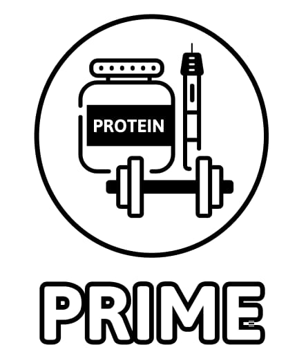

כלי פנימי למחקר. יש להתחבר עם חשבון Google מורשה.

הזנת נתוני נחקר/ת להפקת דוח אישי
כוח לפיתה (Handgrip): יש להזין את הערך הגבוה ביותר מבין הניסיונות, בנפרד ליד ימין וליד שמאל.
*הדוחות לא נשמרים, יש להוריד ולשלוח או להדפיס מיד לאחר הפקת הדו״ח